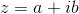
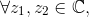
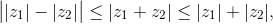
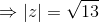

Modulul unui număr complex
Fie un număr complex de forma  .
.
Definiția NC9: Modulul unui număr complex
Se numește modulul lui  , notat , numărul pozitiv .
, notat , numărul pozitiv .
Exemple:
- Modulul numărului complex este:
- Fie numărul complex . Modulul numărului dat este:
Observație:
Dacă , adică numărul se scrie de forma , atunci .
Exemplu:
Modulul numărului complex este:
Propoziția NC10: Proprietățile modulului unui număr complex
- pentru orice ;
- , ceea ce este echivalent cu .
Demonstrație:
Arătăm că are loc prima afirmație a acestei proprietăți, astfel:
oricare ar fi de forma , de unde ne va rezulta că:
pentru orice .
Afirmația de mai sus este adevărată deoarece orice radical de ordin par, în particular, radicalul de ordinul  este număr pozitiv.
este număr pozitiv.
Considerăm că modulul unui număr complex este nul. Atunci avem:
- Modulul unui număr complex coincide cu modulul conjugatului său.
pentru orice 
Demonstrație:
Fie . Atunci conjugatul său este .
Modulul numărului complex dat este:
.
Calculăm modulul conjugatului lui .
- Produsul dintre un număr complex și conjugatul său este egal cu modulul acestui număr.
pentru orice
Demonstrație:
Fie .
Modulul numărului complex este .
Ridicând la pătrat ultima relație, vom obține:
pentru orice
Observație:
Câtul dintre două numere complexe  și poate fi scis astfel:
și poate fi scis astfel:
.
- Modulul produsului a două numere complexe este egal cu produsul modulelor celor două numere.
oricare ar fi
Demonstrație:
Fie numere complexe și .
Produsul celor două numere complexe este:
.
Atunci, modulul produsului numerelor este:
Deci .
- Modulul câtului a două numere complexe este egal cu câtul modulelor lor.
pentru orice  cu .
Demonstrație:
Fie , și .
Câtul celor două numere este:
Atunci, modulul câtului numerelor complexe este:
S-a folosit proprietatea b. .
În concluzie, oricare ar fi cu
- Inegalitatea lui Minkowski (a triunghiului)
 oricare ar fi
Exerciții rezolvate cu modulul unui număr complex
- Să se verifice Propoziția NC10, a., pentru numărul complex .
Rezolvare:
Calculăm modulul numărului complex dat.
.
Așadar, Propoziția NC10, a. a fost verificată.
- Să se verifice dacă modulul numărului complex
 coincide cu modulul conjugatului său .
coincide cu modulul conjugatului său .
Rezolvare:
Verificăm dacă are loc Propoziția NC10, b. .
Calculăm modulul numărului complex  .
.
Calculăm .

.
Așadar, am arătat că Propoziția NC10, b. are loc pentru acest exercițiu.
- Să se verifice dacă are loc Propoziția NC10, c. pentru numărul complex
 .
.
Rezolvare:
Modulul numărului complex este:

Ridicăm la pătrat relația de mai sus și obținem:
Calculăm .
.
Am văzut astfel că Propoziția NC10, c. are loc.
- Să se calculeze , unde
 , .
, .
Rezolvare:
Folosind Propoziția NC10, d., avem:
.
- Să se calculeze , unde și .
Rezolvare:
Folosim Propoziția NC10, e. și obținem: